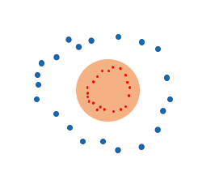
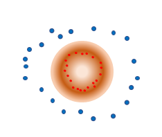
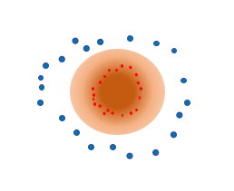

Augment
1.mixup: BEYOND EMPIRICAL RISK MINIMIZATION(ML 2017)
1.1Introduction
以往的模型在学习过程中使用的是ERM，即最小化所有训练数据的平均误差。但是这一方法的泛化能力很差，特别是在测试集的分布与训练集的分布不相同的时候，这时VRM就被提了出来——通过对数据的邻域建模来扩大训练集的分布，比如一张图像的平移、轻微旋转以及微小缩放都可以用来作为这张图像的邻域。将邻域加入到训练集中总而提高模型的泛化能力。但是VRM中图像的邻域和它本身都来自同一类别，对不同类别的图像间的相邻性没有建模。
本文的贡献：在先验知识：数据（feature vectors）的线性组合会引起其目标（one-hot）的线性组合的假设下，引入了以下虚拟数据：
$$
x'=\lambda x_i+(1-\lambda)x_j,其中x_i,x_j是输入向量 \\
y'=\lambda y_i+(1-\lambda)y_j,其中y_i,y_j是one-hot label编码
$$
1.2Method
1.ERM:
在监督学习中，我们会假设输入$x$和标签$y$服从联合分布$P(x,y)$，然后用预测函数$f(x)$来逼近$P(x,y)$。逼近的方法就是最小化$f(x)$和$y$的差异。而最早关于$P(x,y)$的假设是狄拉克（冲激）函数：
$$
P_\delta(x,y)=\frac{1}{n}\sum_{i=1}^{n}\delta(x=x_i,y=y_i)
$$
即每个输入对应一个输出，整个概率分布是一个个等高的尖峰，这样学出来的东西相当于记住了以往训练集里输入了哪些东西，然后把预测值往这些峰上赶。这样的预测值的不确定性会比较离散，泛化能力差。
2.VRM:
为了缓解ERM的尖峰，VRM将$P(x,y)$改为了：
$$
P_v(x',y')=\frac{1}{n}\sum_{i=1}^{n}v(x',y'|x_i,y_i)
$$
其中$v(x',y'|x_i,y_i)$是$x$的正态分布：
$$
v(x',y'|x_i,y_i)=N(x'-x_i,\sigma^2)\delta(y'=y_i)
$$
3.mixup:
mixup对输入数据和标签（one-hot格式）进行了如下操作：
$$
x'=\lambda x_i+(1-\lambda)x_j \\
y'=\lambda y_i+(1-\lambda)y_j
$$
其中$\lambda$是从分布$Beta(\alpha,\alpha)$（$\alpha=1$时即为0-1的均匀分布）中采样而得，这样就降低了预测时不确定性的离散型，我参考论文中的图按自己的理解画出了三者的区别：
|  |  |  |
|---|---|---|
| ERM | VRM | mixup |
此外文中提到了：
- 其他的组合比如3-4个组合的输入或是其他更复杂的组合函数并没有提升实验表现反而增加了运算量。
- 在同一个batch上操作而不是在整个数据集上并不会影响实验表现。
- 在同一个标签中操作并不会比在不同的标签间进行耦合的效果更好。
- 一般取$\lambda \epsilon[0.1,0.4]$再大会导致欠拟合，且在图像分类任务中中更大的网络和更长的训练过程效果会更好。
- 小的权重衰减对mixup会更有用，并且标签平滑loss会降低方法的表现。
2.CutMix(CVPR 2019)
2.1Introduction
在图像检测、图像分类任务中，卷积神经网络可能会缺少对低辨识度区域的关注，比如人的分类过程中，脸会比腿更加有辨识度，从而导致网络学习到的关于腿的特征更少。因此人们提出了很多数据增强或者正则化方法，比如区域dropout、mixup。
区域Dropout是从输入图像中切去一块儿而用0或者高斯噪声来填充，这导致了输入中多出了许多对特征信息提取没有帮助的像素。而mixup在对输入图像进行加权的过程中，让很多地方变得不自然（比如下图中猫和狗头拼在一起）。因此本文在这两者的基础上提出了新的思路：在一张输入图像上挖去一部分，用另一张输入图像的对应部分来填充，这样就解决了区域dropout的信息缺失问题；同时按照图像拼接的比例来合成label，以此利用mixup在分类时对标签的平滑性。
2.2Method
算法的具体实现方法如下：
1.计算出一个0-1掩膜$M$,利用$M$来耦合同一个batch里的两张图像$x_A、x_B$：
$$
x'=M\cdot x_A+(1-M)\cdot x_B
\\
y'=\lambda y_A+(1-\lambda y_B)
$$
其中，$\lambda$和mixup中一样是取自$Beta(\alpha,\alpha)(\alpha=1)$。
2.掩膜$M$的计算方法如下：
计算出替换区域$B=(r_x,r_y,r_w,r_h)$，$r_x,r_y$为替换区域左上角坐标，$r_w,r_h$为替换区域的宽和高。
$$ r_x\epsilon Unif(0,W),r_y\epsilon Unif(0,H) \\ r_w=W\sqrt{1-\lambda},r_h=H\sqrt{1-\lambda} $$这样取可以保证在不越界的情况下替换面积与总面积比等于标签比$1-\lambda$。
在$M$中取$B$区域的值为0其他为1。